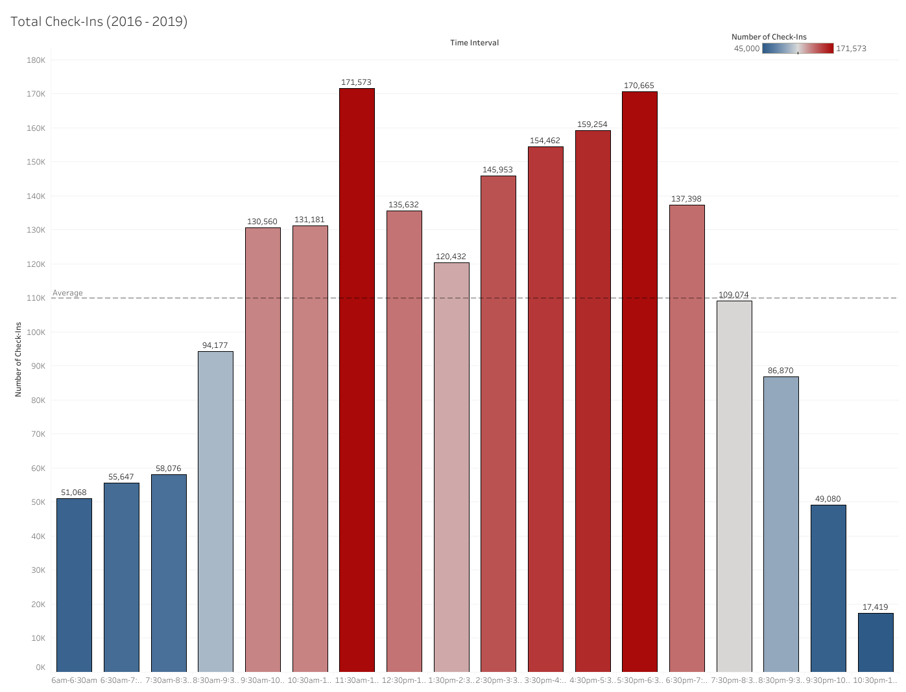
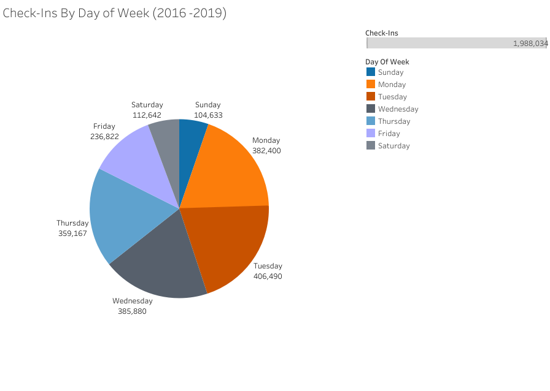
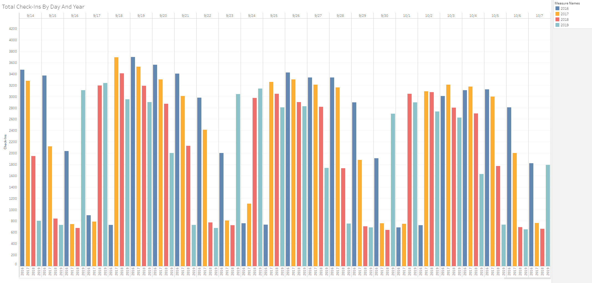
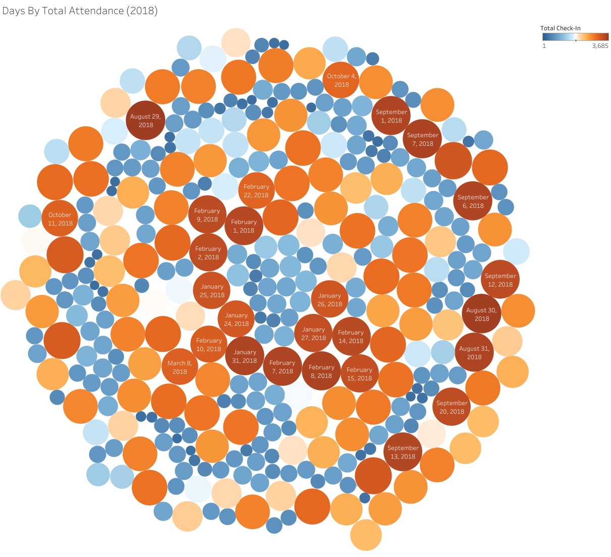
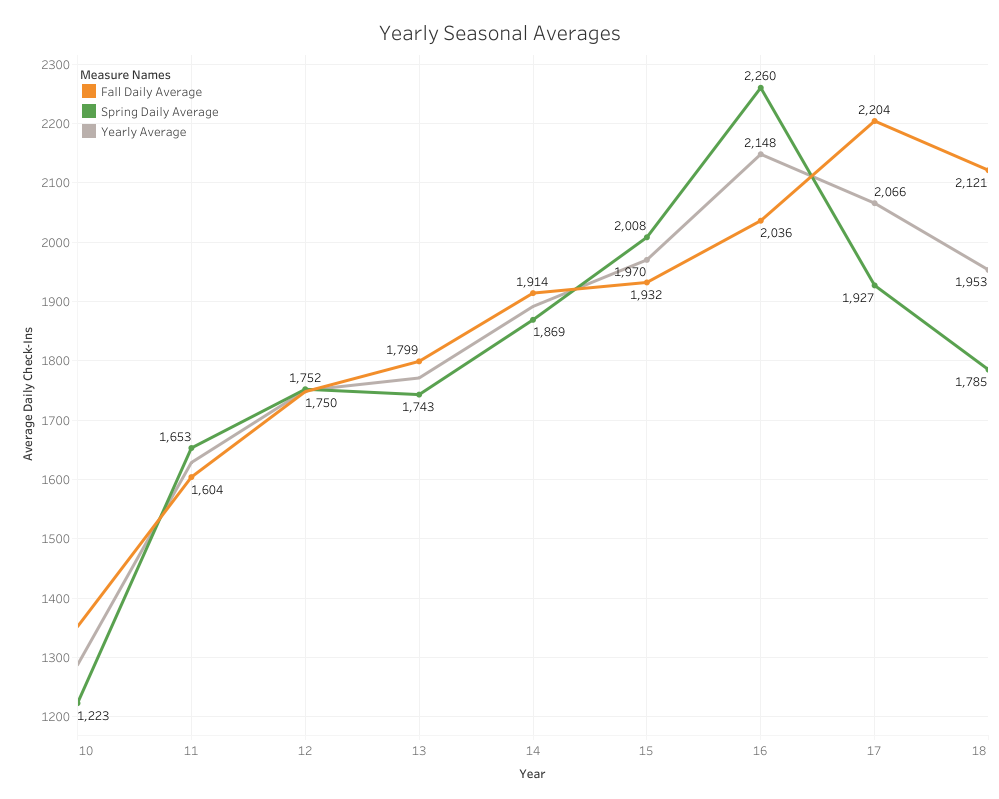
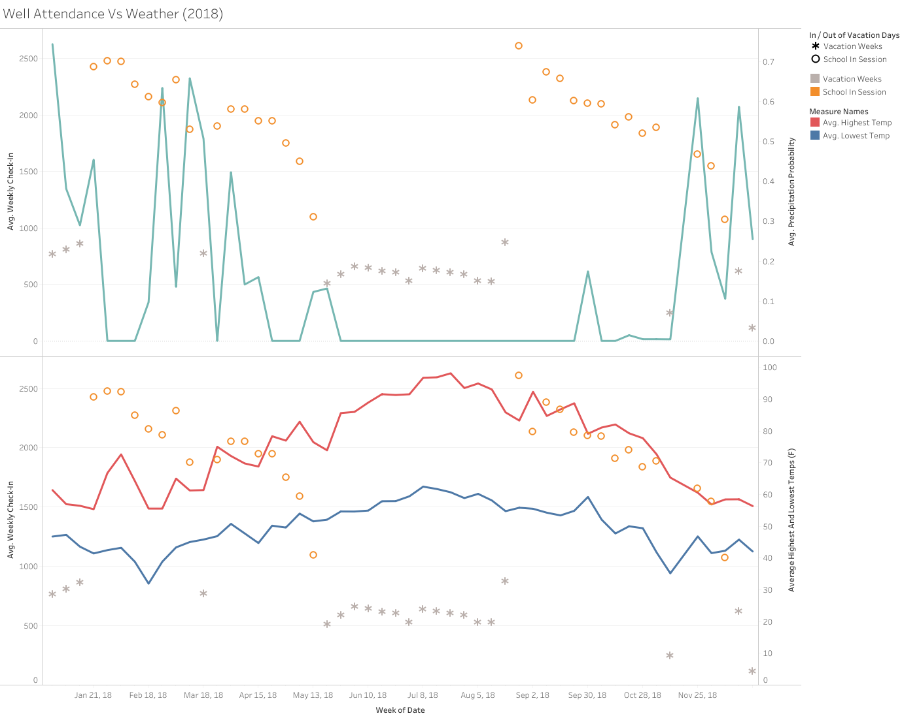
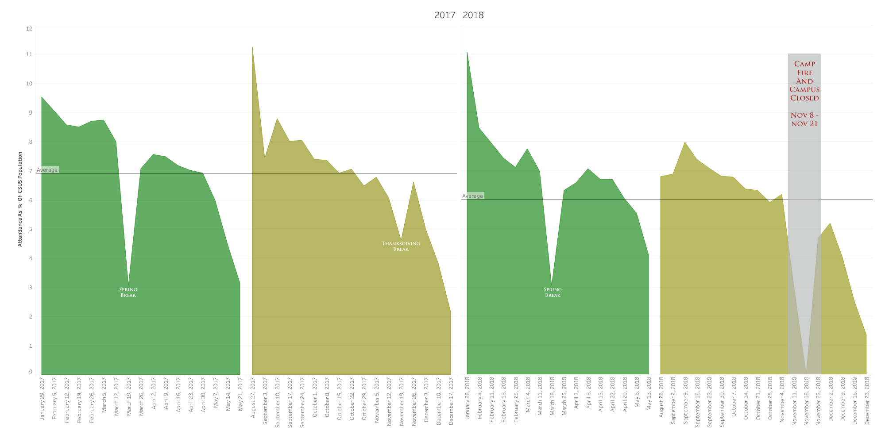
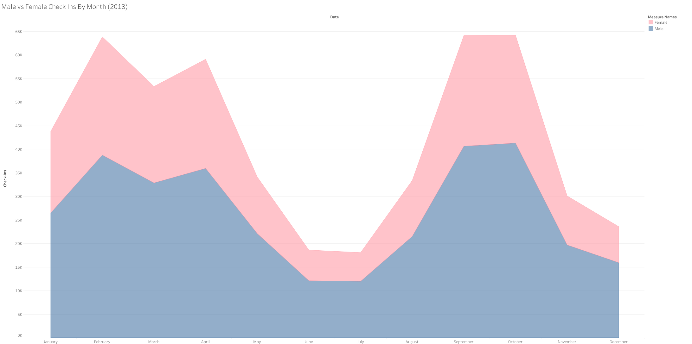
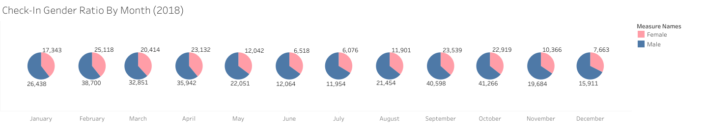
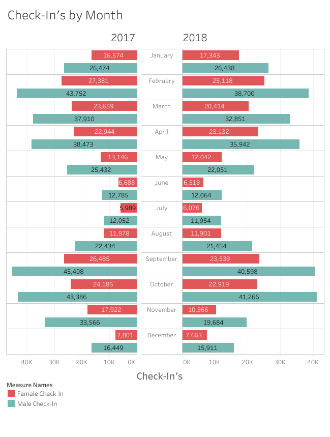

Discoveries & Insights
The first topic to explore is population trends. Put simply, when are
the most people in the gym? I wanted to start small with an hourly break down
then progressively expand outward to day of the week, then week of the year,
and lastly month and season.

Hottest Times To Go To The Gym
Many people try to fit going to the gym into their already packed schedules. Since people
are so busy it is important to find the times where you are mostly likely to be
uninterrupted while completing your workout.
When I had first envisioned exploring this question I was hoping The Well
would also have timestamps for when people left so I could map overall population
in the gym at any given time, but that data is not recorded unfortunately. The most interesting thing
about the trends shown here is that it is bimodal whereas I expected a mostly
normal distribution around 1:30 or so.

Attendance by day of the week
Now that I knew the best times to go, what about the day of the week?
Shown as a pie chart depicting the sums of check ins by day across almost 4 years.
I was originally expecting Monday - Thursday to be the same with Friday through Sunday being
minuscule by comparison. That is roughly what we see here but I was surprised to see that Tuesday
was the busiest day of the week.

A day by day capture of attendance over the last 4 years (2016-2019)
What is shown here is actually just a small snippet of the original chart.
In the original there is an entry for every day of the year. It is extremely verbose
but I wanted to provide a way for the Marketing Team at The Well observe
trends for any day they wanted.

A depiction of the busiest days of the year in 2018
While this chart is quite the visual spectacle, it is not really all that useful.
The chart maps how busy each day of the year was across 2018 by color and size but
I believe even a simple line graph of attendance would impart an easier understanding
of the information here.

A summary of attendance by season (Summer omitted)
With this next chart I wanted to explore how attendance of The Well has changed
over the years since it's opening as well as answering the question of which
semester is busier. My initial guess was that attendance would be a continuous
upward trend and that the spring attendance would be higher as that semester occurs
right after new years resolutions are made.
What we actually see is that the more popular season seems to shift almost
biyearly. Equally surprising was the sharp downward trends in recent years despite
an ever increasing student population. I'm very curious to see what caused the Spring
of 2016 to be so popular.

Effects of Weather and Temperature On Well Attendance
With this chart I was hoping to determine if there was a relationship
between specific weather conditions and gym attendance. I wrote a simple
python script to gather weather data for each of the days listed in my data
set. Although I had a variety of weather data at my disposal, I wanted to know
specifically how temperature and precipitation chance affected attendance. My hypothesis
is that the gym would be less busy on rainy days, and busier when it is hot out since the gym is
heavily air conditioned.
It turns out that there is almost no correlation with precipitation. Additonally
I believe that any apparent correlaton with temperature is more due to people dropping
off of their fitness habits as the semester goes on than it is any specific weather conditions.

Seasonal Depictions of Attendance (2017 - 2018)
Now that we have seen that temperature and rainy weather does not
deter gym-goers, we can hypothesize that the two semesters should have
roughly similar attendance relative to enrollment. It's important to
map attendance as a ratio of enrollment during that semester as the fall
semester has a consistently higher headcount than spring. Simply seeing who
had more attendance then would be misleading. Additionally I wanted to see how
the campus closure due to the Camp Fire in 2018 affected attendance.
Overall we see that the two semesters are actually very similar.
Both seem to start with extremely high attendance levels and experience
a sharp fall off of attendance near finals. The Camp Fire, which led
to a complete closure of both The Well and the CSUS campus had a profound impact
on attendance which was, of course 0, when the campus was raging.
Attendance and Gender
When exploring questions to ask of the data, I decided to reach out to some of my colleagues
to see what information would impact their desire to go to the gym. One of the most common questions
were in some way related to what kinds of people were at the gym at different times. I did not have
access to attendance by age or by major, but I did have access to gender based statistics.

Total Attendance by Gender (2018)
This first chart was an initial exploration to the question: Which gender is in the gym more at any given time?
While it clearly shows that gym attendance is largely male (almost two thirds), it makes
determining exactly how many men and women were actually using the gym in a given month rather difficult
at a glance.

Monthly Attendance As A Ratio Of Gender (2018)
This next chart was an evolution on the first and I feel provides a much more accessible
vision of the ratios of men to women over time. My initial vision of the chart was a 2x6 array
but Tableau consistently thwarted my efforts to display the data as such.

A depiction of Gender Attendance By Month (2017 vs 2018)
Lastly, given how much attendance was shown to vary between any two given years
I wanted to map what we had learned from the previous two charts over two years.
I again chose 2017 and 2018 as they are the most recent complete years. I greatly
enjoyed seeing how relatively consistent attendance is between the two years
(Female attendance in April only differed by 198 between 2017 and 2018!).
Summary
Exploring the attendance data from The Well was extremely rewarding. Each new trend and observation
I made can now help me schedule my days more efficiently. From my research I can now
easily deduce the best times to attend and I learned not to expect an empty gym on rainy days.
Perhaps most importantly I learned that the gym doesn't really "clear out after the
first few weeks" as my fellow gym-goers so often like to say on a busy day. Additionally all of my visualizations
will be passed along to the marketing team at The Well and will hopefully help them
schedule activities more dynamically. Ultimately I found the decision to choose a data
set from a facility I personally use to be quite the boon as it helped fuel my curiosity and creativity.